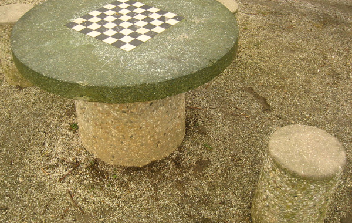

El Club
Hace ya diez años que un grupo de apasionados del ajedrez nos reunimos para compartir nuestra afición. Aunque al principo eramos pocos y quedábamos en una casa o en el centro cultural para comentar partidas famosas y para jugar un buen rato. Pero pronto empezamos a crecer en número: de 6 pasamos a 11 y de 11 a 25.
Pronto empezamos a crecer en número: se nos había ido un poco de las manos.
Esto se nos había ido un poco de las manos por lo que decidimos constituirnos en Club de Ajedrez y darnos a conocer en la ciudad.
Apúntate a nuestro club
Estas son algunas de las actividades que ofrecemos
- Clases de ajedrez desde los 6 años.
- Clases magistrales con partidas en vivo.
- Torneos mensuales.
- Charlas acerca de las grandes partidas de la historia.
- Biblioteca especializada.
¿Quieres participar en nuestras actividades? Apúntate hoy mismo
Quiero participar